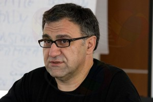

Не только стоит вести речь о разделении россиян на бедных и богатых. Пропасть между разбирающимися в интернете простыми людьми и неразбирающимися чиновниками тоже растет.

Теле- и кинопродюсер Александр Акопов на круглом столе, посвященном авторскому праву заявил в адрес интернет-сайтов следующее.
«Воры, воры, воры. Вы окружены. Сопротивление бесполезно. Мы вас всех всё равно раздавим»
А так как на круглом столе присутствовали представители Википедии, которую совсем невозможно представить, как зарабатывающую на пиратстве организацию, человек «а еще очки одел» добавил:
«Ваша Википедия никому не нужна. Если нашими усилиями она исчезнет, то туда ей и дорога. Энциклопедии должны писать профессионалы. Пусть лучше люди покупают Британнику и читают её»
Впечатление сотрудников Википедии здесь